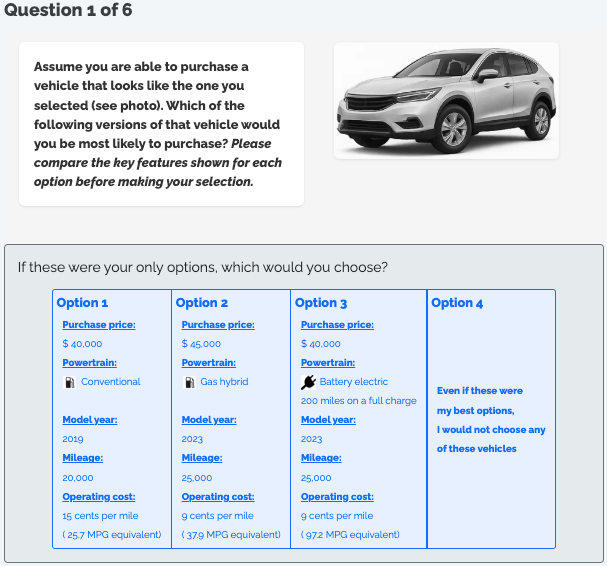
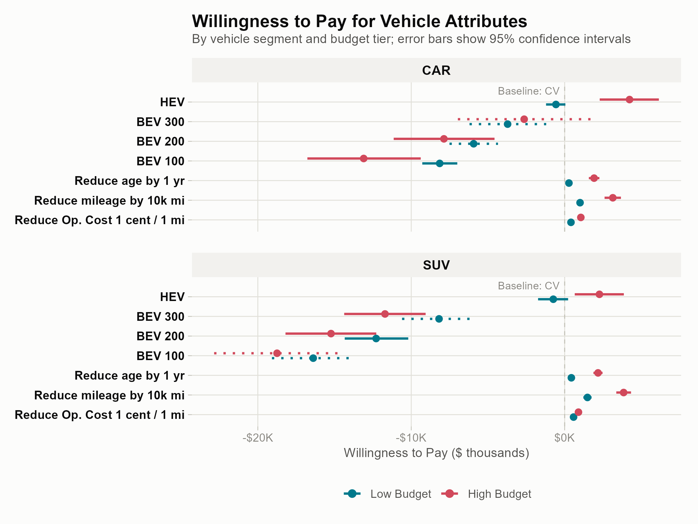
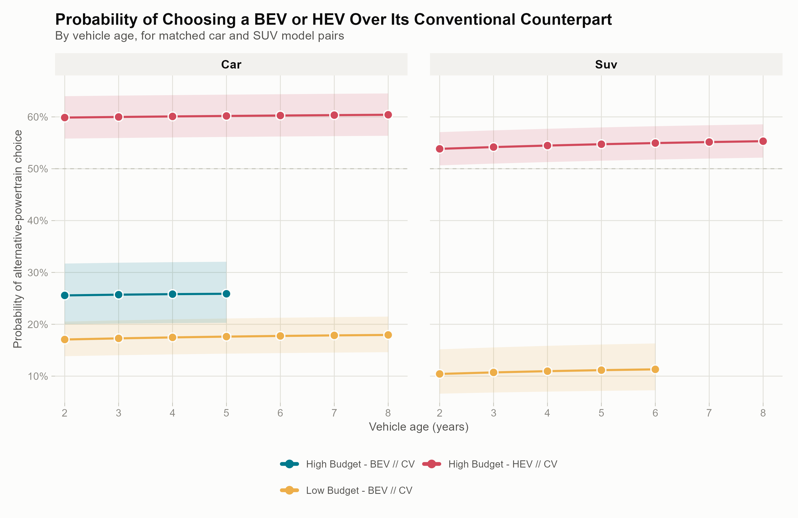

Consumer Preferences in the Used Vehicle Market
Willingness to Pay for Powertrain Type, Driving Range, Vehicle Condition, and Operating Cost
Hoda, Iogansen, Gore, Kneifel, Ranganath, Helveston GWU / NIST Applied Economics Office
Why the used-vehicle market?
- Used vehicles are ~70% of all U.S. vehicle transactions — but EV research has focused almost entirely on new-vehicle buyers
- The used-BEV market is growing fast, and it matters beyond its own transaction volume:
- Extends vehicle and battery lifetimes, supports a circular economy
- Lowers the effective cost of EV ownership for lower- and middle-income households
- Underpins new-vehicle residual values (which affect new-EV leasing economics)
- Used BEVs face extra friction new EVs don’t: uncertainty about prior condition/reliability, and battery aging that odometer + age alone don’t fully signal
Research questions
This study estimates willingness to pay (WTP) for vehicle attributes among prospective used car/SUV buyers, and asks:
How do WTP estimates for vehicle attributes (powertrain, range, age, mileage, operating cost) compare across vehicle segment and budget tier?
How do existing used BEVs compete against their conventional or hybrid counterparts as vehicles age, in the real market?
Survey & choice experiment
- Nationally distributed online survey, 2,254 respondents who intend to buy a used car or SUV within two years (Dynata + Prolific panels)
- Each respondent completes 6 choice tasks: pick among 3 hypothetical used vehicles, or “none of these”
- Attributes varied: powertrain (ICEV / HEV / BEV), price, operating cost, driving range (BEV only), model year (age), mileage
- Four separate designs — one per vehicle body type × budget tier combination — so the price/attribute ranges shown match a plausible purchase context

Sample & modeling strategy
- Six mixed logit (MXL) models estimated in willingness-to-pay space, stratified by:
- Vehicle segment: Car vs. SUV
- Budget tier: Low (≤$20K) vs. High (>$20K)
- Panel-corrected (6 repeated choices per respondent), 5,000 Sobol draws, 10 multi-starts per model
- Why mixed logit, not plain multinomial logit?
- Avoids the implausible IIA assumption (BEV/HEV/ICEV aren’t interchangeable substitutes)
- Lets us test whether preferences are genuinely heterogeneous across respondents — and they are, for almost every attribute
Q1 — Willingness to pay for vehicle attributes

Powertrain findings
- HEV: high-budget buyers place a real premium on hybrids — ~$4,200 (car), ~$2,300 (SUV) — low-budget buyers show no premium
- BEV: penalty relative to conventional vehicles everywhere, but it narrows sharply with range:
| 100 mi range | 300 mi range | |
|---|---|---|
| Car, high budget | –$13,100 | –$2,600 (≈ parity) |
| Car, low budget | –$8,200 | –$3,700 |
| SUV, high budget | –$18,800 | –$11,700 |
| SUV, low budget | –$16,400 | –$8,200 |
- Added range is the single most effective lever for closing the BEV valuation gap — especially for higher-budget car buyers
Condition attributes: age, mileage, operating cost
- All three penalize used-BEV value, and penalties scale with budget tier (high-budget buyers show larger dollar penalties for the same attribute)
- Mileage is the largest penalty of the three: –$1,000 to –$3,800 across segments/tiers
- Vehicle age: –$300 to –$2,200
- Operating cost: –$400 to –$1,100 (smaller than age for high-budget buyers)
- SUV buyers show systematically larger penalties than car buyers at the same budget tier for BEV, mileage, and age — operating cost reverses at the high-budget tier (car penalty larger there)
Q2 — Do real used BEVs compete with conventional vehicles?
- Extends the WTP estimates to a market-share simulation (Helveston et al. 2014 approach): predicted 2-alternative choice probability between a real used BEV/HEV and its closest matched conventional counterpart, at vehicle ages 2–8 years
- 5 matched real-market vehicle pairs (3 car, 2 SUV), using actual used-market listings for depreciation

Policy implications
- The federal used clean-vehicle credit (§25E, up to $4,000/30% of price) only closes the gap for buyers already closest to parity (high-budget car buyers, long range) — it’s a fraction of the $8K–$19K gap facing most other segments
- The $25,000 price cap on that credit excludes many of the 250–300-mile-range used BEVs that are closest to competitive, while subsidizing shorter-range vehicles the credit can’t make competitive anyway
- ~$15,000–$20,000 of the age-related WTP gap exceeds normal depreciation — plausibly a battery state-of-health information gap, addressable via disclosure/certification/warranties rather than cash transfers
- Segment-aware policy — and continued promotion of HEVs, which are already market-competitive — looks more efficient than uniform subsidies
Conclusion
- Driving range and vehicle age are the dominant value determinants for used BEVs — effects that swamp budget tier or vehicle segment alone
- Used BEVs reach price parity with conventional vehicles in only one segment: high-budget car buyers, 300-mile range
- Hybrids are already there — matching or beating conventional vehicles in predicted market share for high-budget car/SUV buyers, at every observed age
- For everyone else, the used-BEV discount required is large, predictable, and currently under-served by existing incentive design
Limitations
- Stated, not revealed, preferences — hypothetical bias possible (direction uncertain)
- Online panel sample may over-represent information-engaged consumers
- MXL assumes continuous normal heterogeneity — a latent-class model would test for discrete preference clusters directly
- Battery state-of-health was not varied in this DCE (covered in a companion battery-attribute DCE)
Questions?
Zain Hoda · zain.hoda@gwu.edu